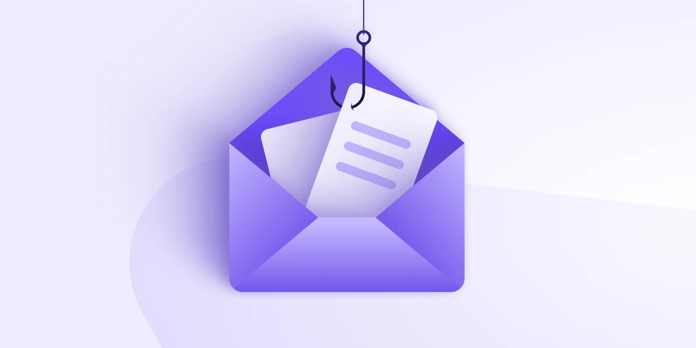
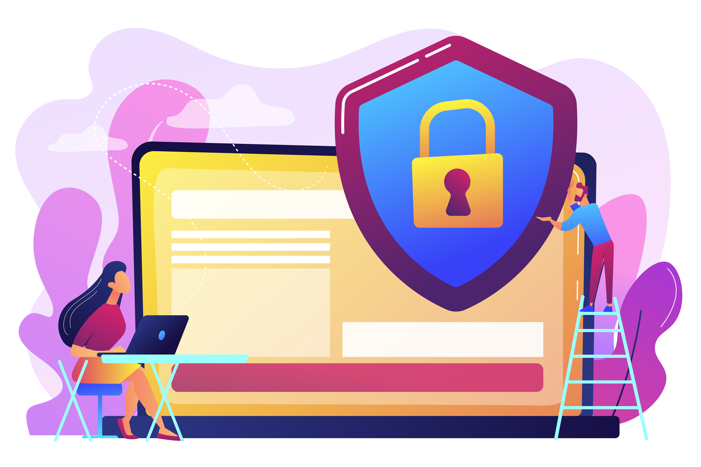
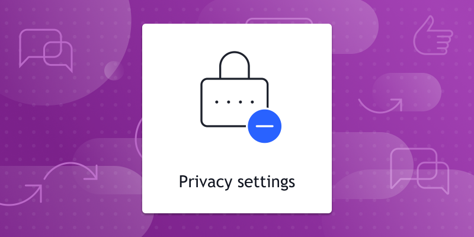

GENERAL ONLINE SAFETY TIPS
The list provided helpful tips for users to maintain their
security and safety online
- 1. Use Antivirus and Antimalware Software: Installing Antivirus or Antimalware
Software keeps you safe
browsing the internet, it protects your personal information and your computer from
malicious
websites and softwares
- 2. Be Cautious with Links and Attachments: Avoid clicking on suspicious links or
downloading
attachments from unknown sources.
- 3. Educate Yourself About Phishing: Be aware of phishing scams that attempt to trick
you into revealing
personal information or downloading malicious software. Verify the authenticity of
requests for
sensitive information.
- 4. Strong, Unique Passwords: Use strong passwords with a combination of letters
(uppercase and
lowercase), numbers, and symbols. Avoid using easily guessable information like
birthdays or common
words.
- 5. Backup Your Data: Regularly back up important files and data to an external hard
drive or cloud
storage service. This helps protect against data loss due to malware or hardware
failure.
- 6. Review Privacy Settings: Regularly review and adjust privacy settings on social
media platforms and
other online services to control who can see your information.
- 7. Monitor Your Accounts: Regularly monitor your bank accounts, credit cards, and
online accounts for
any unauthorized transactions or suspicious activity.
- 8. Log Out of Accounts: Always log out of online accounts when you have finished
using them, especially
when using shared or public computers.
CREATING STRONG PASSWORDS
Having a strong passwords in our personal accounts is really important in order to
protect our private
informations and avoid being hacked by hackers, here we also list on how we can make
sure our accounts
are safe

- 1. Length: Aim for passwords that are at least 12-16 characters long. Longer
passwords are generally
more secure
- 2. Complexity: Use a mix of uppercase letters, lowercase letters, numbers, and
special characters (e.g., !, @, #, $, %).
- 3. Avoid Personal Information: Do not use easily discoverable information like your
name, birthdate, or
common words.
- 4. Avoid Common Patterns: Stay away from sequences (e.g., "12345" or "abcdef"),
repeated characters
("aaaa"), or keyboard patterns ("qwerty").
- 5. Randomness: Generate passwords randomly or use a password manager to create and
store complex passwords.
- 6. Passphrases: Consider using a passphrase—a sequence of random words strung
together. This can be easier to remember and more secure.
RECOGNIZING PHISHING SCAMS
Scammers use email or text messages to try to steal your passwords, account numbers,
or Social Security numbers. If they get that information, they could get access to
your email, bank, or other accounts. Or they could sell your information to other
scammers. Scammers launch thousands of phishing attacks like these every day — and
they’re often successful.
Scammers often update their tactics to keep up with the latest news or trends, but
here are some common tactics used in phishing emails or text messages

Phishing emails and text messages often tell a story to trick you into clicking on a
link or opening an attachment. You might get an unexpected email or text message
that looks like it’s from a company you know or trust, like a bank or a credit card
or utility company. Or maybe it’s from an online payment website or app. The message
could be from a scammer, who might
- • say they’ve noticed some suspicious activity or log-in attempts — they haven’t
- • claim there’s a problem with your account or your payment information — there
isn’t
- • say you need to confirm some personal or financial information — you don’t
- • include an invoice you don’t recognize — it’s fake
- • want you to click on a link to make a payment — but the link has malware
- • say you’re eligible to register for a government refund — it’s a scam
- • offer a coupon for free stuff — it’s not real
PROTECTING PERSONAL INFORMATION
Protecting our own personal information is if not the most important thing we always
need to keep in mind when we are browsing online. Because there is so many dangerous
websites or malicious users wants to access our personal accounts, these tips that
haved been provided can help users maintain the safety of the personal informations

- • Be careful when you speak with unknown callers. Scammers may mislead you by
using legitimate phone numbers or the real names of officials. If they threaten
you or make you feel uneasy, hang up.
- • Create strong, unique passwords so others can’t easily access your accounts.
Use different passwords for different accounts so if a hacker compromises one
account, they can’t access other accounts.
- • Be careful when you speak with unknown callers. Scammers may mislead you by
using legitimate phone numbers or the real names of officials. If they threaten
you or make you feel uneasy, hang up.
- • Protect your mobile device from unauthorized access by securing it with a PIN,
adding a fingerprinting feature, or using facial recognition. You can also add a
password and adjust the time before your screen automatically locks.
- • Protect yourself on social media by customizing your security settings and
deleting accounts you no longer use. Also, double-check suspicious messages from
your contacts, as hackers may create fake accounts of people you know.
- Never give your personal or financial information in response to an unsolicited
call or message, and never post it on social media.
Privacy Settings

Configuring privacy settings on social media and other online platforms is crucial
for safeguarding your personal information. Start by reviewing each platform's
default settings, which often prioritize visibility over privacy.Adjust these
settings to limit who can see your profile, posts, and personal details
Consider making your profile private or restricting access to friends and connections
you know and trust. Be cautious about sharing sensitive information such as your
full birthdate, address, or phone number, as this data can be used for identity
theft or targeted advertising. Regularly update your privacy settings as platforms
update their policies and features.
Finally, take advantage of additional security measures like two-factor
authentication to further protect your accounts from unauthorized access. By
actively managing your privacy settings, you can enjoy a safer and more secure
online experience.